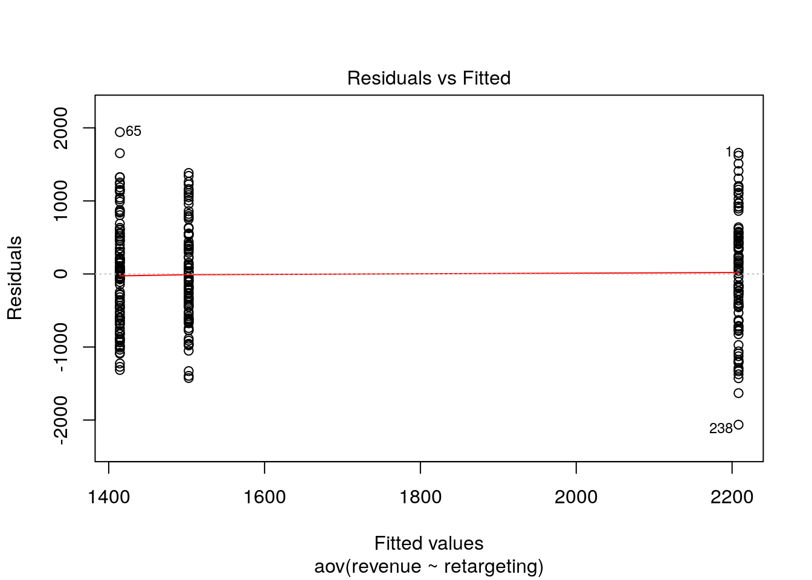

Assignment 3 (Hypothesis Testing 2)
The data file contains customer information from an online fashion shop. In an experiment, the customers were exposed to different types of online advertising over the past year (randomly assigned) and now you wish to analyze the results.
The following variables are included in the data set:
- customerID: unique customer ID
- revenue: revenue per cusomer for the past year (in EUR)
- gender: 0=male, 1=female
- retargeting: type of online advertising that the customer was exposed to (3 levels: 1 = no advertising, 2 = generic retargeting, 3 = dynamic retargeting)
- customerRank: ranking of customers according to their expenditure level (low rank = valuable customer, high rank = less valuable customer)
- conversion: indicator variable, indicating if a customer converted in the previous campaign (0 = no conversion, 1 = conversion)
Use R and appropriate analytical techniques to answer the following questions:
- Has the types of online advertising an effect on revenue? Are there significant differences between the individual groups?
- Is the customer ranking significantly influenced by the type of online advertising? Are there significant differences between the individual groups?
- Does the conversion rate in the previous campaign differ between male and female customers?
When answering the questions, please remember to address the following points, where appropriate:
- Formulate the corresponding hypotheses and choose an appropriate statistical test
- Provide the reason for your choice and discuss if the assumptions of the test are met
- Convert the variables to the appropriate type (e.g., factor variables)
- Create appropriate graphs to explore the data (e.g., boxplot, bar chart, histogram)
- Provide appropriate descriptive statistics for the variables
- Report and interpret the test results accurately (including confidence intervals)
- Finally, don’t forget to report your research conclusion in an appropriate way
When you are done with your analysis, click on “Knit to HTML” button above the code editor. This will create a HTML document of your results in the folder where the “assignment3.Rmd” file is stored. Open this file in your Internet browser to see if the output is correct. If the output is correct, submit the HTML file via Learn@WU. The file name should be “assignment3_studendID_name.html”.
Load data
rm(list = ls())
customer_data <- read.table("https://raw.githubusercontent.com/IMSMWU/MRDA2018/master/data/assignment3.csv",
sep = ";",
header = TRUE) #read in data
head(customer_data)## 'data.frame': 296 obs. of 6 variables:
## $ revenue : int 3866 1576 2667 772 2702 1277 2023 2170 3103 3067 ...
## $ gender : int 1 1 1 1 1 1 1 1 1 1 ...
## $ retargeting: int 3 1 1 1 3 2 1 3 3 1 ...
## $ customerID : int 2 7 8 12 13 14 22 24 26 31 ...
## $ rank : int 1 159 37 259 35 203 103 87 17 19 ...
## $ conversion : int 1 1 0 1 1 1 0 1 1 0 ...Data Preparation
As always, the first step is to load required packages (packages that have not been used as often in the course will be loaded as required to show which packages contain certain functions) and to load and inspect the data.
Next we are going to recode some of the variables into factors and give them more descriptive level names.
customer_data$retargeting <- factor(customer_data$retargeting, levels = c(1,2,3), labels = c("no retargeting", "generic retargeting", "dynamic retargeting"))
customer_data$gender <- factor(customer_data$gender, levels = c(1,0),labels = c("female","male"))
customer_data$conversion <- factor(customer_data$conversion, levels = c(1,0), labels = c("conversion","no conversion"))Question 1
To answer whether the type of advertising has an effect on revenue we need to formulate a testable null hypothesis. In our case the null hypothesis is stating that the average level of sales is equal for all advertising types. In mathematical notation this implies:
\[H_0: \mu_1 = \mu_2 = \mu_3 \]
The alternate hypothesis is simply that the means are not all equal, i.e.,
\[H_1: \textrm{Means are not all equal}\]
If you wanted to put this in mathematical notation, you could also write:
\[H_1: \exists {i,j}: {\mu_i \ne \mu_j} \]
The appropriate test for such a hypothesis is one-way ANOVA since we have a metric scales dependent variable and a categorical independent variable with more than two levels.
Next we will calculate summary statistics for the data and produce an approppriate plot.
##
## Descriptive statistics by group
## group: no retargeting
## vars n mean sd median trimmed mad min max range skew kurtosis
## X1 1 106 1414.31 714.21 1437.5 1386.42 786.52 100 3356 3256 0.31 -0.53
## se
## X1 69.37
## ------------------------------------------------------------
## group: generic retargeting
## vars n mean sd median trimmed mad min max range skew kurtosis
## X1 1 90 1502.63 681.3 1445 1491.79 729.44 78 2885 2807 0.12 -0.74
## se
## X1 71.82
## ------------------------------------------------------------
## group: dynamic retargeting
## vars n mean sd median trimmed mad min max range skew kurtosis
## X1 1 100 2208.28 796.85 2277.5 2218.12 735.37 145 3866 3721 -0.16 -0.51
## se
## X1 79.68ggplot(customer_data, aes(retargeting, revenue)) +
stat_summary(fun.y = mean, geom = "bar", fill = "White", colour = "Black") +
stat_summary(fun.data = mean_cl_normal, geom = "pointrange") +
labs(x = "Experimental group (promotion level)", y = "Number of sales") +
theme_bw()
Both the summary statistics and the plot hint at the fact that the means may not be equal. Especially the difference between dynamic retargeting and no retargeting/ generic regtargeting seem to be quite high. Before we move to the formal test, we need to see if a series of assumptions are met, namely:
- Distributional assumptions
- Homogeneity of variances
- Independence of observations
The last assumption is satisfied due to the fact that the observations were randomly assigned to the advertisement groups. To see if we need to worry about distributional assumptions we first take a look at the number of observations in each advertising group.
##
## no retargeting generic retargeting dynamic retargeting
## 106 90 100Due to the fact that there are always more than 30 observations in each group we can rely on the central limit theorem to satisfy the distributional assumptions.
Homogeneity of variances can be checked with Levene’s test (implemented as leveneTest() from the car package). The null hypothesis of this test is that the variances are equal, with the alternative hypothesis being that the variances are not all equal.
#Homogeneity of variances test:
library(car)
leveneTest(revenue ~ retargeting, data=customer_data, center=mean)## Levene's Test for Homogeneity of Variance (center = mean)
## Df F value Pr(>F)
## group 2 1.2455 0.2893
## 293The test result is insignificant (for a signifcance level of 5 %), meaning that we do not reject the null hypothesis of equal variances and can operate under the assumption that the variances are equal.
Since all assumptions are fulfilled we can move on to conducting the actual ANOVA using the aov() function.
## Df Sum Sq Mean Sq F value Pr(>F)
## retargeting 2 37966043 18983022 35.26 0.000000000000019 ***
## Residuals 293 157734112 538342
## ---
## Signif. codes: 0 '***' 0.001 '**' 0.01 '*' 0.05 '.' 0.1 ' ' 1The p-value is smaller than 0.05, which we chose as our significance level, meaning that we reject the null hypothesis of the means being equal in the three advertising groups.
Next we will briefly inspect the residuals of the ANOVA to see if the assumptions of the test really are justified.

The first plot gives us a feel for the distribution of the residuals of the three groups. The residuals seem to be roughly equally distributed, which speaks for the fact that the homogeneity of variances assumptions is fulfilled.

The second plot is a QQ-plot of the residuals, meant as a quick visual check to see if the normality assumption is fulfilled. Leading up to the test we only checked if there were more than 30 observations per group to satisfy the normality assumption but despite this being fulfilled it is still important to check the normality of the residuals, as any strange behaviour here may indicate problems with the model specification.
To further confirm that the residuals are roughly normally distributed we employ the Shapiro-Wilk test. The null hypothesis is that the distribution of the data is normal, with the alternative hypothesis positing that the data is not normally distributed.
##
## Shapiro-Wilk normality test
##
## data: resid(aov)
## W = 0.99378, p-value = 0.2637The p value is far above any widely used significance level and thus we can not reject the null hypothesis of normal distribution, which further implies that the normality assumption is fulfilled.
The ANOVA result only tells us that the means of the three groups are not equal, but it does not tell us anything about which pairs of means are unequal. To find this out we need to conduct post hoc tests to test the following null hypotheses for the respective pairwise comparisons.
\[1) H_0: \mu_1 = \mu_2; H_1 = \mu_1 \neq \mu_2 \\ 2) H_0: \mu_2 = \mu_3; H_1 = \mu_2 \neq \mu_3 \\ 3) H_0: \mu_1 = \mu_3; H_1 = \mu_1 \neq \mu_3 \]
Here we will conduct both the Bonferroni correction as well as Tukey’s HSD test, however either would be sufficient for your homework. Bonferroni’s correction conducts multiple pairwise t-tests, with the null hypothesis being that of equal means in each case and the alternative hypothesis stating that the means are unequal.
#bonferroni
pairwise.t.test(customer_data$revenue, customer_data$retargeting, data=customer_data, p.adjust.method = "bonferroni")##
## Pairwise comparisons using t tests with pooled SD
##
## data: customer_data$revenue and customer_data$retargeting
##
## no retargeting generic retargeting
## generic retargeting 1 -
## dynamic retargeting 0.00000000000042 0.00000000051570
##
## P value adjustment method: bonferroniThe Bonferroni test reinforces what we saw in our plot earlier, namely that not all of the means might be significantly different from each other.
We can only reject the null hypothesis in the cases:
dynamic regargeting vs. no retargeting
dynamic regargeting vs. generig retargeting
But there seems to be no difference in the means of generic retargeting vs. no retargeting.
Tukey’s HSD similarly compares pairwise means, corrected for family-wise errors (both of the post hoc tests would have been considered correct).
#tukey correction using the mult-comp package
library(multcomp)
tukeys <- glht(aov, linfct = mcp(retargeting = "Tukey"))
summary(tukeys)##
## Simultaneous Tests for General Linear Hypotheses
##
## Multiple Comparisons of Means: Tukey Contrasts
##
##
## Fit: aov(formula = revenue ~ retargeting, data = customer_data)
##
## Linear Hypotheses:
## Estimate Std. Error t value
## generic retargeting - no retargeting == 0 88.32 105.17 0.840
## dynamic retargeting - no retargeting == 0 793.97 102.28 7.762
## dynamic retargeting - generic retargeting == 0 705.65 106.61 6.619
## Pr(>|t|)
## generic retargeting - no retargeting == 0 0.678
## dynamic retargeting - no retargeting == 0 <0.0001 ***
## dynamic retargeting - generic retargeting == 0 <0.0001 ***
## ---
## Signif. codes: 0 '***' 0.001 '**' 0.01 '*' 0.05 '.' 0.1 ' ' 1
## (Adjusted p values reported -- single-step method)Tukey’s correction confirms the conclusion from the Bonferroni test from above. While there seems to be no difference in the means of generic retargeting vs. no retargeting, dynamic retargeting seems to differ significantly from both generic retargeting and no retargeting.
Tukey’s HSD further let’s us estimate the difference in means with corresponding confidence intervals.
##
## Simultaneous Confidence Intervals
##
## Multiple Comparisons of Means: Tukey Contrasts
##
##
## Fit: aov(formula = revenue ~ retargeting, data = customer_data)
##
## Quantile = 2.3553
## 95% family-wise confidence level
##
##
## Linear Hypotheses:
## Estimate lwr upr
## generic retargeting - no retargeting == 0 88.3220 -159.3836 336.0276
## dynamic retargeting - no retargeting == 0 793.9687 553.0543 1034.8830
## dynamic retargeting - generic retargeting == 0 705.6467 454.5520 956.7413# The mar parameter changes the margins around created plots. This is done so the labels on the side of the Tukey plot are visible (however, this was not expected).
par(mar = c(5, 20, 4, 2))
plot(tukeys)
It is clearly visible that just the CIs of generic retargetring vs. no retargeting cross the 0 bound, which further indicates that the differences in means are statistically not significantly different from 0.
From a reporting standpoint we can say that revenue is higher when using dynamic retargeting vs. no retargeting or generic retargeting, but there is no sifnificant difference between the sales for products in the dynamic retargeting vs. no retargeting conditions. Managerially, this menas that only dynamic retargetting helps us to increase sales.
Question 2
For this question we want to examine whether customer ranks are signifcantly different for different types of advertising. Because we are dealing with data on an ordinal scale, we can not use ANOVA for this type of question. The non-parametric counterpart is the Kruskal-Wallis test, which tests for differences in medians between groups. Hence, the null hypothesis is that the medians are equal in each group and the alternative hypothesis is that there is a difference between at least one pair of groups in terms of the median.
\[H_0: \bar{\mu}_1 = \bar{\mu}_2 = \bar{\mu}_3 \] \[H_1: \textrm{The meadians are not all equal} \] Or, alternatively
\[H_1: \exists {i,j}: {\bar \mu_i \ne \bar \mu_j} \]
A good way to visualize ordinal data is through a boxplot.
ggplot(data = customer_data, aes(x = retargeting, y = rank)) +
geom_boxplot() +
theme_bw() +
labs(x = "", y = "Rank")
The boxplot seems to indicate that the medians are unequal. At least for dynamic retargeting our customer ranks seem to be lower than the ones of no retargeting or generic retargeting.
The only assumption that we require for this test is that the dependent variable is at least ordinal, which is fulfilled for customer ranks. Hence we can move on to performing the test in R.
#ordinal data so we use a non-parametric test
kruskal.test(rank ~ retargeting, data = customer_data)##
## Kruskal-Wallis rank sum test
##
## data: rank by retargeting
## Kruskal-Wallis chi-squared = 54.163, df = 2, p-value =
## 0.000000000001732The p-value is below any sensible signifcance level and thus we reject the null hypothesis of equal medians. This means that the median rank of customers is different for different types of retargeting, implying that the type of retargeting has an effect on the customer rank.
To further see which of the medians are unequeal we perform the Nemenyi post hoc test, which can be found in the PCMCR package in R. The null hyptohesis is that the pairwise medians are equal, while the alternative hypothesis is that the pairwise medians are unequal.
library(PMCMR)
posthoc.kruskal.nemenyi.test(x = customer_data$rank, g = customer_data$retargeting, dist = "Tukey")##
## Pairwise comparisons using Tukey and Kramer (Nemenyi) test
## with Tukey-Dist approximation for independent samples
##
## data: customer_data$rank and customer_data$retargeting
##
## no retargeting generic retargeting
## generic retargeting 0.67 -
## dynamic retargeting 0.000000000022 0.000000030987
##
## P value adjustment method: noneSimilar to question 1 we can see that there seems to be no difference in (median) customer ranks of no retargeting vs. generic retargeting. On the other side ranks of dynamic retargeting seem to be significantly different from both no retargeting and generic retargeting. This implies that just dynamic retargeting leads to different customer ranks.
Question 3
To find out whether our conversion rate differs between our female and male customers, we can use a test for proportions instead of a test for mean differences. To test for the equality of proportions (and therefore no difference between them) we can use a \(\chi^2\) test.
Our null hypothesis in this case states that the proportions of conversion are equal for females and males. Our alternative hypothesis states that these proportions are unequal.
\[H_0: \pi_1 = \pi_2 \\ H_1: \pi_1 \neq \pi_2\]
First let´s create a summary plot to get a feeling for the data.
#conditional relative frequencies
rel_freq_table <- as.data.frame(prop.table(table(customer_data$gender, customer_data$conversion), 1))
names(rel_freq_table) <- c("gender", "conversion","freq") # changing names of the columns
rel_freq_tableggplot(rel_freq_table, aes(x = gender, y = freq, fill = conversion)) + #plot data
geom_col(width = .7) + #position
geom_text(aes(label = paste0(round(freq*100,0),"%")), position = position_stack(vjust = 0.5), size = 4) + #add percentages
ylab("Proportion of conversions") + xlab("gender") + # specify axis labels
theme_bw()
We see that our conversion seems to be better for our female customers, but let´s check whether these proportions are significantly different.
n1 <- nrow(subset(customer_data, gender == "female")) #number of observations for females
n2 <- nrow(subset(customer_data, gender == "male")) #number of observations for males
n1_conv <- nrow(subset(customer_data, gender == "female" & conversion == "conversion")) #number of conversions for females
n2_conv <- nrow(subset(customer_data, gender == "male" & conversion == "conversion")) #number of conversions for males
prop.test(x = c(n1_conv, n2_conv), n = c(n1, n2), conf.level = 0.95)##
## 2-sample test for equality of proportions with continuity correction
##
## data: c(n1_conv, n2_conv) out of c(n1, n2)
## X-squared = 24.236, df = 1, p-value = 0.0000008523
## alternative hypothesis: two.sided
## 95 percent confidence interval:
## 0.1548639 0.3586496
## sample estimates:
## prop 1 prop 2
## 0.3851351 0.1283784The test showed that the conversion rate for females was 26% higher compared to male customers. This difference is highly significant \(\chi^2\) (1) = 24.2, p < .05 (95% CI = [0.16,0.36]), which means that we can reject our null hypothesis of equal probability and state that there indeed is a difference between our male and female customers respective their conversion rate.